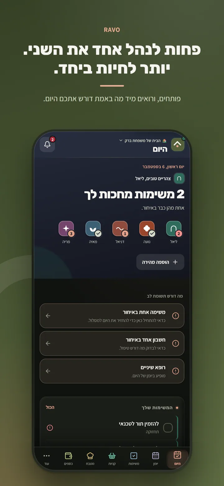
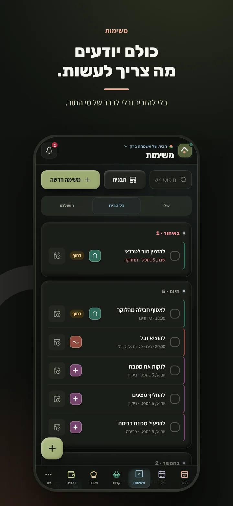
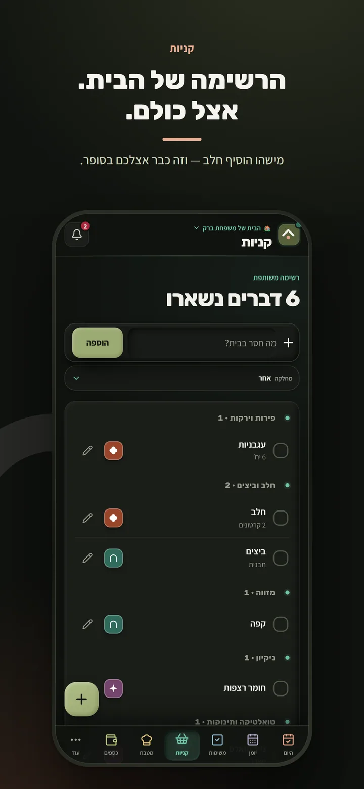
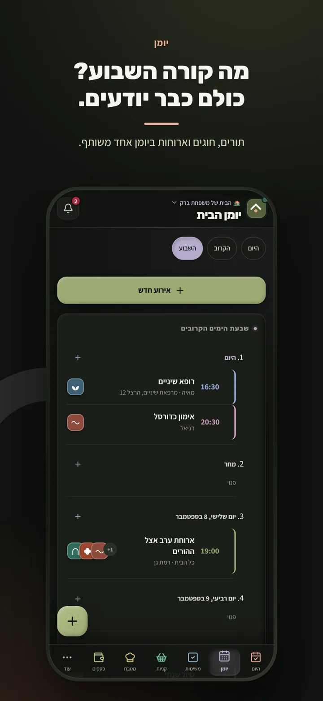
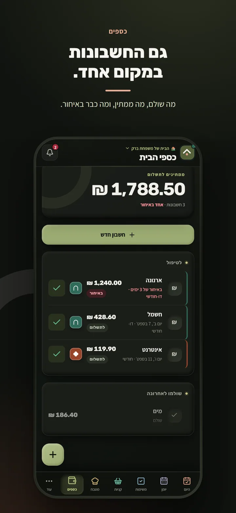
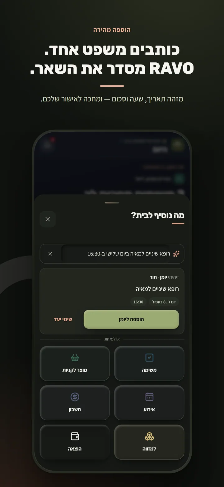
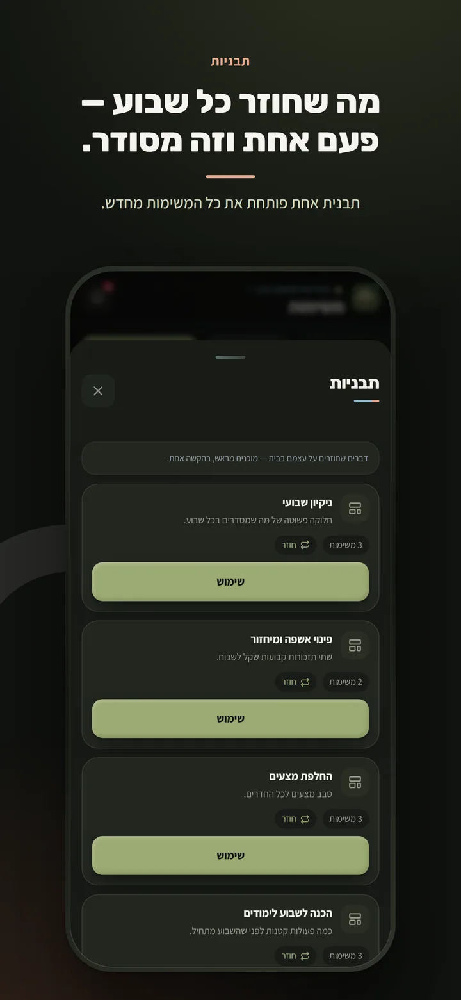
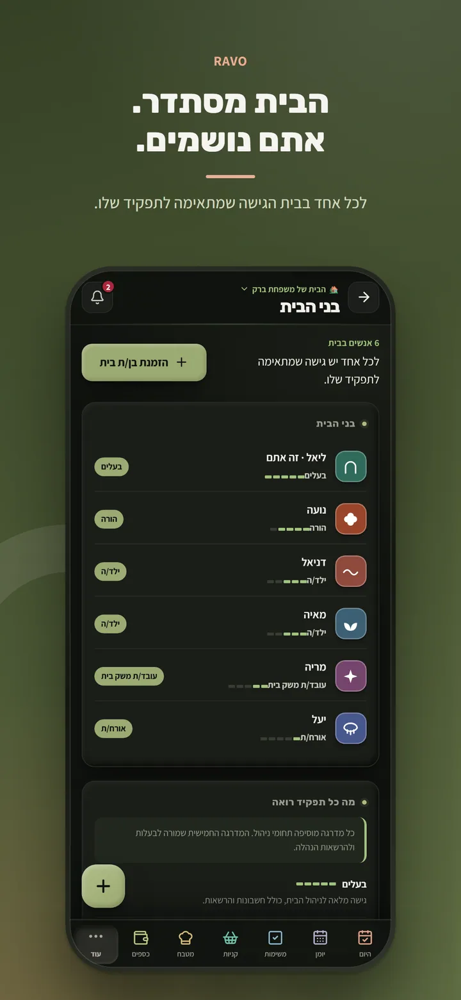
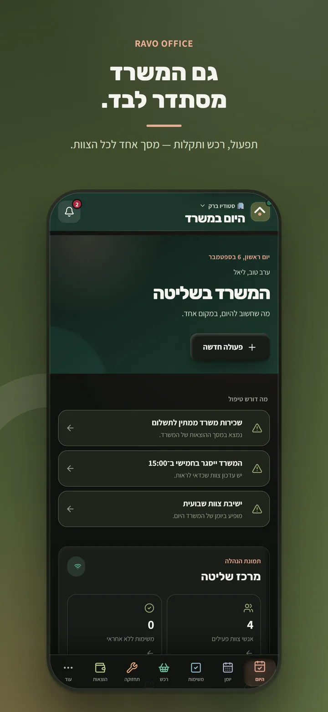
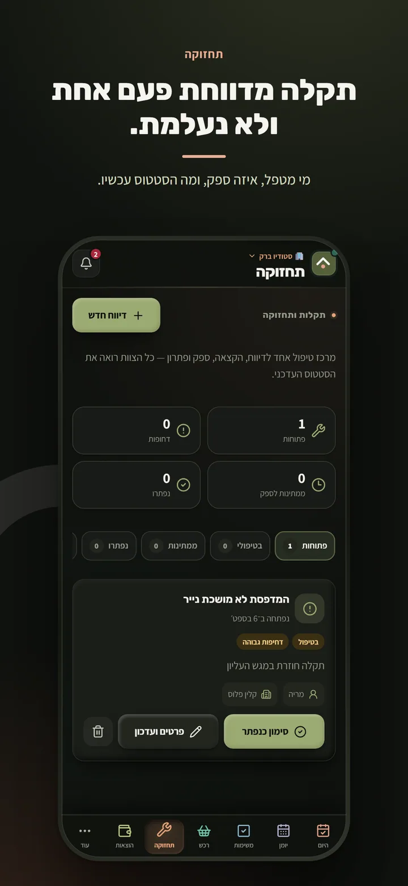

01
היום
מה שחשוב עכשיו, בלי לחפש.
משימות קרובות, תזכורות ותמונת מצב אחת שמספרת לבית מה צריך לקרות היום.
מערכת ההפעלה של הבית
משימות, קניות, יומן, חשבונות ושגרות — כל מה שמחזיק את הבית, במקום משותף אחד.

זה לא אמור ליפול על אדם אחד
מי היה אמור לקבוע את התור?
רשימת הקניות נשארה בין ההודעות.
החשבון הגיע — אבל למי?
ושוב מישהו צריך להזכיר לכולם.
העיקרון של RAVO
כשכולם רואים את אותה תמונה, האחריות ברורה יותר — בלי עוד שרשרת הודעות ובלי להפוך אדם אחד למנהל הבית.
היום
משימות קרובות, תזכורות ותמונת מצב אחת שמספרת לבית מה צריך לקרות היום.
משימות
כל משימה במקום ברור, עם אחראי, זמן וחזרתיות כשצריך. כולם יודעים מה נשאר ומה כבר נעשה.

קניות
מוסיפים כשנזכרים, מסמנים בחנות, ורואים בזמן אמת מה עוד נשאר.

יומן
תורים, אירועים ותוכניות של הבית בתצוגה משותפת — בלי לחבר פיסות מידע מכמה מקומות.

כל מה שמחזיק את הבית

מי משלם, מתי, ומה כבר טופל — תיאום ביתי, לא שירות בנקאי ולא ייעוץ פיננסי.

כותבים בעברית מה צריך לקרות. RAVO מסדרת את השאר בתוך המקום הנכון.

דברים שחוזרים לא צריכים להתחיל מאפס. שומרים פעם אחת ומחזירים לשבוע הבא.
בית משותף
בני הבית רואים את מה שרלוונטי להם, מקבלים אחריות ברורה, ופחות דברים נופלים בין הכיסאות.

RAVO OFFICE
לצוותים קטנים שרוצים לראות מה דורש טיפול: משימות, רכש, ציוד משרדי, הוצאות, יומן, ספקים, ציוד, תחזוקה והודעות — במרחב אחד.


פרטיות בלי דרמה
הגישה מבוססת חשבון והרשאות. מידע של בית אחד אינו פתוח לבית אחר.
אין פרסומות, אין מכירת מידע אישי ואין עוגיות מעקב של צד שלישי באתר הזה.
מחיקת חשבון זמינה בתוך המוצר. התקשורת מוצפנת וההרשאות נאכפות במסד הנתונים.
שאלות נפוצות
RAVO היא מערכת הפעלה משותפת לבית: מקום אחד למשימות, קניות, יומן, חשבונות ושגרות.
לבתים שרוצים פחות עומס סמוי ופחות תיאומים מפוזרים. יש גם סביבת Office לצוותים ומשרדים קטנים.
הערך גדל כשבני הבית משתתפים, אבל לכל אחד אפשר להגדיר תפקיד והרשאות שמתאימים לו.
הגישה פרטית ומבוססת חשבון. אין מכירת מידע או פרסום ממוקד. פרטים מלאים נמצאים במדיניות הפרטיות.
RAVO מתכוננת להשקה ב־App Store. קישור רשמי יופיע כאן כשהעמוד הציבורי יהיה זמין. מחיר, אם יהיה, יפורסם לפני השקה בתשלום.
RAVO — המתכון לשלום בית.